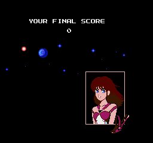
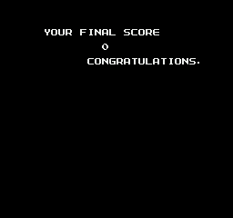
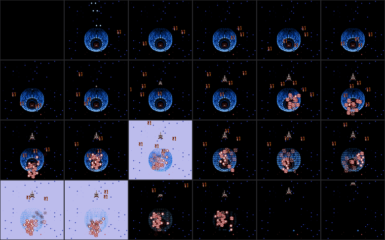

From the final boss’s last hit to the screen the game stops on. Every step is read from the code and linked to the next by an address; the whole chain is unchecked on hardware.
$51 becomes 22 (bank 7 $ECDC), and the final boss, It (type $4F, $9151[22]), is fought in a short corridor of its own. The boss-fight songs at bank 3 $9168 have 23 entries, 0-22 — one per corridor including that one: $3 $3 $3 $6 $6 $3 $3 $6 $3 $6 $3 $16 $3 $6 $6 $16 $3 $16 $3 $16 $3 $6 $6.| Step | Where | What it does |
|---|---|---|
| 1. The boss dies | bank 3 $92EE → $931E → $9355 | The boss phase $70 waits at $92EE until the object in the boss slot no longer has type $72. In a corridor ($30 bit 6) $9355 plays song $2F, far-calls bank 6 $8003, and runs eight explosions (positions from $93F2, sound $23, four frames each). $9387 adds two to $70. |
| 2. The stage-end flag | bank 3 $93A3-$93EA | $73 counts 90 frames, then song $1F and the victory song ($1B in a corridor, $1A in the labyrinth) play and the code waits for $0300 to clear. In a corridor it then sets $A0 bit 0 ($93E8). Corridor 21 is the exception: it only does this when the boss is type $4D ($93B4-$93BC); for the other five bosses of the gauntlet it just clears $70 and returns. |
| 3. The frame loop notices | bank 7 $E659 → $EB18 | The scroll step clears $A0 bit 2 and, if bit 0 is set, JMP $EB18. With the player alive that reaches $EB78; in a corridor ($30 bit 6) and not in the demo, $EB9C falls to $EBFE, which clears $70 and, because $30 bits 5-6 are set, goes to $EC54 and then $ECBD. |
| 4. Which corridor ended | bank 7 $ECBD | $51 = 0 → $ECE7 (the opening flight). 1-20 → $ECE4: mark it cleared ($EFBA) and run the stage-clear routine $F506. 21 → $ECC7: $F506, far call bank 0 $8012 (→ $88F5, a starfield of blank tiles and star tiles from the script at $88B7), then far call bank 2 $801B (→ $8836, a wordless scene: see below) and INC $51 → 22, loaded through $EC94. 22 → $ECE1: $F506 first, and it never returns, so corridor 22 is never marked cleared. |
| 5. Stage clear, for 22 | bank 7 $F506-$F5DE | Corridors 0 and 22 skip the clear fanfare ($F50A/$F50C). The scroll target goes to 0 and the code loops until the speed is 0. $F4A7 gives no key for corridors above 10, so 22 takes $F544 and goes to $F5DE. |
| 6. The ship leaves | bank 7 $F5DE-$F66B | Slot 0 becomes type 5 with metasprite 1. Corridors 0 and 22 start it at velocity 0 with $0638 = 1 and accelerate it toward y = 0 ($F648, accel $20) until it leaves the screen; every other corridor starts it at velocity −2. |
| 7. Final score | bank 7 $F667-$F6AB | Only for $51 = 22 (corridor 0 goes to $F659, the labyrinth). It prints “YOUR FINAL SCORE” at PPU $2086, a 0 tile at $20CE and the six score digits at $20C8 ($E118), then far-calls bank 2 $8021. |
| 8. The ending routine | bank 2 $8A69-$8AFF | LDX #$FF / TXS throws the stack away, so nothing below it ever returns. $30 is cleared. A normal game: loads tile block 4 of bank 1 ($D7F9), writes attribute bytes ($D5CC items at $8A88-$8ABF), blits a 10 × 13 tile picture from $8B05 to PPU $21F1 ($D99C), copies 22 sprites from $8B87 into OAM and 25 palette bytes from $8BDF to $0180. A TGL game ($30 bit 1 before it was cleared) takes $8A3D: attributes, the word CONGRATULATIONS at $210C, a white backdrop colour and no picture. Both then run $EDB7, start song $0F and far-call bank 0 $8015. The two endings are drawn below, from running this code. |
| 9. The credits | bank 0 $8915 → $8927 | Eight credit screens after MISSION COMPLETE, each held for the seconds in $8BB2 ($F0 counts them), then it waits for Start ($F5 bit 4) and draws a tenth screen: PASSWORD TGL. After that $899F loops forever ($89AE-$89B3), animating two sprites. Nothing leaves this loop; only the reset button does. |
Rebuilt from the ROM exactly as bank 2 $8A69 builds it: tile block 4 of bank 1 (109 tiles) in pattern table 1, the 10 × 13 tile frame at $8B05 placed at tile column 17, row 15, attribute bytes from the $8A88 fills, 25 palette bytes from $8BDF, and the 22 sprites at $8B87.
$B0-$ED, border $F2-$F9) lies inside block 4's range $8F-$FB; nothing here read $2000. That the result is a coherent portrait is the evidence. Tile $20, the frame's empty cells, is drawn blank.The game checks $30 bit 1, the TGL flag, once, at bank 2 $8A69, and clears $30 straight after, so everything past that point — the credits included — is the same for both. The difference is the screen it draws first. Both images are the screen when the routine far-calls the credits, from running the ROM code (below).
| Normal game | TGL game |
|---|---|
 |  |
YOUR FINAL SCORE, the portrait frame, the planet and stars, 25 palette bytes from $8BDF, song $0F. | YOUR FINAL SCORE and CONGRATULATIONS on black: $8A3D writes only attributes and the text, sets $0181 to white ($30), and skips the picture, the sprites and the palette copy. The last glyph, tile $5B, draws as a full stop with the font loaded at that point, so the word ends “CONGRATULATIONS.” |
Bank 2 $8836, run for 689 frames (11.5 seconds) from $ECCA to the INC $51 at $ECDC. The code draws a starfield (the script at bank 0 $88B7), loads the planet's tiles and the ship's ($F6E5, $F717), then steps a phase counter $0638 (+$40 a frame, one step per four frames): the ship eases toward y = 0 (steps 0-15), moves down slightly (16-31), turns through eight metasprites $88A6 (32-63), then at 64-127 spawns explosions (type 7, sounds $22/$23) and flashes the backdrop $32 two frames in seven; from step 96 it erases the planet's tiles in a shuffled order ($88AE), and from step 128 accelerates the ship up the screen until it leaves.

tools/render-ending.py, which runs the ROM’s own code on a small NES model (tools/tgl/cpu.py: no cycle accuracy, no IRQ, no audio, one scroll value per frame) starting from a savestate of corridor 15, with $51, $30, the stage-clear state and the palette of corridor 21's last row put in. Sprites and tiles are what the code made of the savestate's RAM and CHR. The savestate is not in the repository, so the images are committed rather than built. The layout of the scene (what moves when) is the code's; exact pixels, colours and timing are the model's and have not been compared with hardware.$8836 shows beyond a ship animating over stars (it is wordless and was only skimmed). What sprites 0 and 1 are (they start off screen). Corridor 22’s music is song $19, read from $EF2A[22] at $EF40 (the code does read it; nothing else says it is meant). The wordless cutscene’s timing.A run of 35 bytes the code trace reached by following control flow, in bank 0 at $88F5-$8917. **This region claims the extent and nothing else.** What the code does has not been established; the evidence is that every byte here is part of an instruction on some path the trace could follow from the interrupt vectors and the banks' entry tables, and that the trace met no illegal opcode anywhere. Generated by tools/gen-code-regions.py from tools/trace-code.py - see that tool's --assumptions for what the reachability rests on. To say more about any part of this stretch, claim it in a hand-authored region file; the generator subtracts what is already claimed before it emits, so the hand-written region wins.
$88F5 20 C5 82 A9 80 85 A6 20 87 C0 20 22 88 A9 21 85 | ...... .. "..!.| $8905 19 A9 A0 85 18 A9 88 85 17 A9 B7 85 16 4C 95 84 |.............L..| $8915 20 06 C0 | ..|
Three bytes of far-call argument following `JSR $D76F` at bank 0 $8915 - bank number, then the target address minus one, little-endian. They select **bank 2 $8000**. The stored word is $7FFF rather than $8000 because $D790 pushes these two bytes as a fake return address and lets RTS add the one back; that is not an inference, it is what the four instructions at $D799-$D7A4 do. A far call is the one reference in this ROM that no grep for an operand will ever surface, so the target is recorded here where a reader will find it.
$8918 02 FF 7F |...|
A run of 222 bytes the code trace reached by following control flow, in bank 0 at $891B-$89F8. **This region claims the extent and nothing else.** What the code does has not been established; the evidence is that every byte here is part of an instruction on some path the trace could follow from the interrupt vectors and the banks' entry tables, and that the trace met no illegal opcode anywhere. Generated by tools/gen-code-regions.py from tools/trace-code.py - see that tool's --assumptions for what the reachability rests on. To say more about any part of this stretch, claim it in a hand-authored region file; the generator subtracts what is already claimed before it emits, so the hand-written region wins.
$891B A9 00 85 F0 A9 89 85 17 A9 F9 85 16 A9 22 85 19 |............."..| $892B A9 20 85 18 20 95 84 A9 30 8D D9 04 A0 0A 20 B6 |. .. ...0..... .| $893B 89 20 6E C1 A5 15 D0 F4 A4 F0 C0 08 B0 56 A4 F0 |. n..........V..| $894B E6 F0 C0 01 D0 08 A9 54 8D 00 02 8D 04 02 B9 B2 |.......T........| $895B 8B 48 A0 3C 20 B6 89 68 38 E9 01 D0 F4 A9 0F 8D |.H.< ..h8.......| $896B D9 04 A0 03 20 B6 89 20 6E C1 A5 15 D0 F4 A2 0A |.... .. n.......| $897B A9 22 85 19 A9 20 85 18 A9 20 85 14 A9 10 85 15 |."... ... ......| $898B 20 36 C0 A5 18 18 69 20 85 18 90 02 E6 19 CA D0 | 6....i ........|
A screen-painting script for the renderer at bank 0 $8495, painting from PPU $2220: 2 items over 2 row breaks, 23 bytes, ending at $8A0F on the $FE the renderer stops at. An item is [col][count][characters]; the column is ORed into the PPU address low byte, $FF ends a row and adds $20 to the address, and bit 7 of the count means repeat one character instead of advancing through the source, which is a run-length fill. **Nothing in the ROM names this address as an operand.** It is reached through a pointer built as LDA #lo / STA $16 and LDA #hi / STA $17 at $891F-$892F, which is the idiom playbook section 5 warns about: a search for the address would report the block unreferenced. It was found by walking traced code and tracking immediates. The printable bytes read as: "MISSIONCOMPLETE.". NOT ESTABLISHED: what the non-letter tile numbers depict, and whether the glyph readings that hold for the dialogue script hold here - the renderers are different and CHR is RAM, so the font need not be the same one.
$89F9 02 07 4D 49 53 53 49 4F 4E FF FF 04 09 43 4F 4D |..MISSION....COM| $8A09 50 4C 45 54 45 5B FE |PLETE[.|
A screen-painting script for the renderer at bank 0 $8495, painting from PPU $2220: 3 items over 4 row breaks, 37 bytes, ending at $8A34 on the $FE the renderer stops at. An item is [col][count][characters]; the column is ORed into the PPU address low byte, $FF ends a row and adds $20 to the address, and bit 7 of the count means repeat one character instead of advancing through the source, which is a run-length fill. THE ENDING CREDITS. $891B points $16/$17 at $89F9 once; each pass of the loop at $8927 renders the next script at PPU $2220 - $8495 leaves the pointer just past the $FE - waits $8BB2[$F0] seconds and clears the text. So this script is reached by SEQUENCE, not by any pointer: nothing in the ROM names its address. Screen 2 of the chain $89F9 (MISSION COMPLETE) ... $8BA3 (PASSWORD TGL), which partitions $89F9-$8BB1 exactly. The printable bytes read as: "YOU ARE THEGREATESTPLAYER.". NOT ESTABLISHED: what the non-letter tile numbers depict, and whether the glyph readings that hold for the dialogue script hold here - the renderers are different and CHR is RAM, so the font need not be the same one.
$8A10 02 0B 59 4F 55 20 41 52 45 20 54 48 45 FF FF 04 |..YOU ARE THE...| $8A20 08 47 52 45 41 54 45 53 54 FF FF 07 07 50 4C 41 |.GREATEST....PLA| $8A30 59 45 52 5B FE |YER[.|
A screen-painting script for the renderer at bank 0 $8495, painting from PPU $2220: 5 items over 7 row breaks, 64 bytes, ending at $8A74 on the $FE the renderer stops at. An item is [col][count][characters]; the column is ORed into the PPU address low byte, $FF ends a row and adds $20 to the address, and bit 7 of the count means repeat one character instead of advancing through the source, which is a run-length fill. THE ENDING CREDITS. $891B points $16/$17 at $89F9 once; each pass of the loop at $8927 renders the next script at PPU $2220 - $8495 leaves the pointer just past the $FE - waits $8BB2[$F0] seconds and clears the text. So this script is reached by SEQUENCE, not by any pointer: nothing in the ROM names its address. Screen 3 of the chain $89F9 (MISSION COMPLETE) ... $8BA3 (PASSWORD TGL), which partitions $89F9-$8BB1 exactly. The printable bytes read as: "PROGRAMAND EFFECTJEMINI HIRONOPASSWORDWAO ISEE". NOT ESTABLISHED: what the non-letter tile numbers depict, and whether the glyph readings that hold for the dialogue script hold here - the renderers are different and CHR is RAM, so the font need not be the same one.
$8A35 04 07 50 52 4F 47 52 41 4D FF 06 0A 41 4E 44 20 |..PROGRAM...AND | $8A45 45 46 46 45 43 54 FF FF 02 0D 4A 45 4D 49 4E 49 |EFFECT....JEMINI| $8A55 20 48 49 52 4F 4E 4F FF FF 04 08 50 41 53 53 57 | HIRONO....PASSW| $8A65 4F 52 44 FF FF 02 08 57 41 4F 20 49 53 45 45 FE |ORD....WAO ISEE.|
A screen-painting script for the renderer at bank 0 $8495, painting from PPU $2220: 2 items over 2 row breaks, 30 bytes, ending at $8A92 on the $FE the renderer stops at. An item is [col][count][characters]; the column is ORed into the PPU address low byte, $FF ends a row and adds $20 to the address, and bit 7 of the count means repeat one character instead of advancing through the source, which is a run-length fill. THE ENDING CREDITS. $891B points $16/$17 at $89F9 once; each pass of the loop at $8927 renders the next script at PPU $2220 - $8495 leaves the pointer just past the $FE - waits $8BB2[$F0] seconds and clears the text. So this script is reached by SEQUENCE, not by any pointer: nothing in the ROM names its address. Screen 4 of the chain $89F9 (MISSION COMPLETE) ... $8BA3 (PASSWORD TGL), which partitions $89F9-$8BB1 exactly. The printable bytes read as: "MAP MAKERPOCHI NAKAMORI". NOT ESTABLISHED: what the non-letter tile numbers depict, and whether the glyph readings that hold for the dialogue script hold here - the renderers are different and CHR is RAM, so the font need not be the same one.
$8A75 04 09 4D 41 50 20 4D 41 4B 45 52 FF FF 02 0E 50 |..MAP MAKER....P| $8A85 4F 43 48 49 20 4E 41 4B 41 4D 4F 52 49 FE |OCHI NAKAMORI.|
A screen-painting script for the renderer at bank 0 $8495, painting from PPU $2220: 3 items over 3 row breaks, 37 bytes, ending at $8AB7 on the $FE the renderer stops at. An item is [col][count][characters]; the column is ORed into the PPU address low byte, $FF ends a row and adds $20 to the address, and bit 7 of the count means repeat one character instead of advancing through the source, which is a run-length fill. THE ENDING CREDITS. $891B points $16/$17 at $89F9 once; each pass of the loop at $8927 renders the next script at PPU $2220 - $8495 leaves the pointer just past the $FE - waits $8BB2[$F0] seconds and clears the text. So this script is reached by SEQUENCE, not by any pointer: nothing in the ROM names its address. Screen 5 of the chain $89F9 (MISSION COMPLETE) ... $8BA3 (PASSWORD TGL), which partitions $89F9-$8BB1 exactly. The printable bytes read as: "GRAPHICJANUS TERAMOTOYORIKI". NOT ESTABLISHED: what the non-letter tile numbers depict, and whether the glyph readings that hold for the dialogue script hold here - the renderers are different and CHR is RAM, so the font need not be the same one.
$8A93 04 07 47 52 41 50 48 49 43 FF FF 02 0E 4A 41 4E |..GRAPHIC....JAN| $8AA3 55 53 20 54 45 52 41 4D 4F 54 4F FF 02 06 59 4F |US TERAMOTO...YO| $8AB3 52 49 4B 49 FE |RIKI.|
A screen-painting script for the renderer at bank 0 $8495, painting from PPU $2220: 5 items over 7 row breaks, 52 bytes, ending at $8AEB on the $FE the renderer stops at. An item is [col][count][characters]; the column is ORed into the PPU address low byte, $FF ends a row and adds $20 to the address, and bit 7 of the count means repeat one character instead of advancing through the source, which is a run-length fill. THE ENDING CREDITS. $891B points $16/$17 at $89F9 once; each pass of the loop at $8927 renders the next script at PPU $2220 - $8495 leaves the pointer just past the $FE - waits $8BB2[$F0] seconds and clears the text. So this script is reached by SEQUENCE, not by any pointer: nothing in the ROM names its address. Screen 6 of the chain $89F9 (MISSION COMPLETE) ... $8BA3 (PASSWORD TGL), which partitions $89F9-$8BB1 exactly. The printable bytes read as: "MUSICMIYAMOSHANTEFFECT IDEASIN!KUN". NOT ESTABLISHED: what the non-letter tile numbers depict, and whether the glyph readings that hold for the dialogue script hold here - the renderers are different and CHR is RAM, so the font need not be the same one.
$8AB8 04 05 4D 55 53 49 43 FF FF 02 06 4D 49 59 41 4D |..MUSIC....MIYAM| $8AC8 4F FF 02 05 53 48 41 4E 54 FF FF 04 0B 45 46 46 |O...SHANT....EFF| $8AD8 45 43 54 20 49 44 45 41 FF FF 02 07 53 49 4E 5D |ECT IDEA....SIN]| $8AE8 4B 55 4E FE |KUN.|
A screen-painting script for the renderer at bank 0 $8495, painting from PPU $2220: 9 items over 9 row breaks, 97 bytes, ending at $8B4C on the $FE the renderer stops at. An item is [col][count][characters]; the column is ORed into the PPU address low byte, $FF ends a row and adds $20 to the address, and bit 7 of the count means repeat one character instead of advancing through the source, which is a run-length fill. THE ENDING CREDITS. $891B points $16/$17 at $89F9 once; each pass of the loop at $8927 renders the next script at PPU $2220 - $8495 leaves the pointer just past the $FE - waits $8BB2[$F0] seconds and clears the text. So this script is reached by SEQUENCE, not by any pointer: nothing in the ROM names its address. Screen 7 of the chain $89F9 (MISSION COMPLETE) ... $8BA3 (PASSWORD TGL), which partitions $89F9-$8BB1 exactly. The printable bytes read as: "TEST PLAYMIDNIGHTCOMMANDER!NUIJANUS TERAMOTOKUNNYTANIDASHANTPAL...ETC". NOT ESTABLISHED: what the non-letter tile numbers depict, and whether the glyph readings that hold for the dialogue script hold here - the renderers are different and CHR is RAM, so the font need not be the same one.
$8AEC 04 09 54 45 53 54 20 50 4C 41 59 FF FF 02 08 4D |..TEST PLAY....M| $8AFC 49 44 4E 49 47 48 54 FF 03 0D 43 4F 4D 4D 41 4E |IDNIGHT...COMMAN| $8B0C 44 45 52 5D 4E 55 49 FF 02 0E 4A 41 4E 55 53 20 |DER]NUI...JANUS | $8B1C 54 45 52 41 4D 4F 54 4F FF 02 05 4B 55 4E 4E 59 |TERAMOTO...KUNNY| $8B2C FF 02 06 54 41 4E 49 44 41 FF 02 05 53 48 41 4E |...TANIDA...SHAN| $8B3C 54 FF 02 03 50 41 4C FF 06 06 5B 5B 5B 45 54 43 |T...PAL...[[[ETC| $8B4C FE |.|
A screen-painting script for the renderer at bank 0 $8495, painting from PPU $2220: 2 items over 2 row breaks, 26 bytes, ending at $8B66 on the $FE the renderer stops at. An item is [col][count][characters]; the column is ORed into the PPU address low byte, $FF ends a row and adds $20 to the address, and bit 7 of the count means repeat one character instead of advancing through the source, which is a run-length fill. THE ENDING CREDITS. $891B points $16/$17 at $89F9 once; each pass of the loop at $8927 renders the next script at PPU $2220 - $8495 leaves the pointer just past the $FE - waits $8BB2[$F0] seconds and clears the text. So this script is reached by SEQUENCE, not by any pointer: nothing in the ROM names its address. Screen 8 of the chain $89F9 (MISSION COMPLETE) ... $8BA3 (PASSWORD TGL), which partitions $89F9-$8BB1 exactly. The printable bytes read as: "DIRECTORMOO NIITANI". NOT ESTABLISHED: what the non-letter tile numbers depict, and whether the glyph readings that hold for the dialogue script hold here - the renderers are different and CHR is RAM, so the font need not be the same one.
$8B4D 04 08 44 49 52 45 43 54 4F 52 FF FF 02 0B 4D 4F |..DIRECTOR....MO| $8B5D 4F 20 4E 49 49 54 41 4E 49 FE |O NIITANI.|
A screen-painting script for the renderer at bank 0 $8495, painting from PPU $2220: 5 items over 6 row breaks, 60 bytes, ending at $8BA2 on the $FE the renderer stops at. An item is [col][count][characters]; the column is ORed into the PPU address low byte, $FF ends a row and adds $20 to the address, and bit 7 of the count means repeat one character instead of advancing through the source, which is a run-length fill. THE ENDING CREDITS. $891B points $16/$17 at $89F9 once; each pass of the loop at $8927 renders the next script at PPU $2220 - $8495 leaves the pointer just past the $FE - waits $8BB2[$F0] seconds and clears the text. So this script is reached by SEQUENCE, not by any pointer: nothing in the ROM names its address. Screen 9 of the chain $89F9 (MISSION COMPLETE) ... $8BA3 (PASSWORD TGL), which partitions $89F9-$8BB1 exactly. The printable bytes read as: "CREATED BYCO"PILEPRODUCED BYIREMCORPORATION". NOT ESTABLISHED: what the non-letter tile numbers depict, and whether the glyph readings that hold for the dialogue script hold here - the renderers are different and CHR is RAM, so the font need not be the same one.
$8B67 02 0A 43 52 45 41 54 45 44 20 42 59 FF 07 07 43 |..CREATED BY...C| $8B77 4F 5E 50 49 4C 45 FF FF FF 02 0B 50 52 4F 44 55 |O^PILE.....PRODU| $8B87 43 45 44 20 42 59 FF 03 04 49 52 45 4D FF 05 0B |CED BY...IREM...| $8B97 43 4F 52 50 4F 52 41 54 49 4F 4E FE |CORPORATION.|
Fifteen bytes: col 2, count 12, 'PASSWORD TGL', then $FE. THIS IS THE BACK DOOR'S OWN SCREEN. The password routine in bank 3 has a special case for the three characters T, G and L (see bank3.data_8513), and this is the text that names it, sitting immediately after the IREM credits script. WHAT THE SCREEN DOES is not established - only that the ROM contains a script that says this. HOW IT IS REACHED (found later): it is the tenth and last screen of the ending-credits chain. The loop at bank 0 $8927 renders the scripts from $89F9 in sequence at PPU $2220; after the ninth (CREATED BY COMPILE / PRODUCED BY IREM CORPORATION) $899F waits for Start, then takes one more pass - the wait $8BB2[8] = $8BBA - and renders this one. So pressing Start at the end of the credits shows the back-door password. CORRECTION: the region bank0.text_8B80 ('PRODUCED BY / IREM / CORPORATION' as a script of its own) was wrong - $8B80 is the middle of the ninth screen's script, which begins at $8B67 with CREATED BY / COMPILE.
$8BA3 02 0C 50 41 53 53 57 4F 52 44 20 54 47 4C FE |..PASSWORD TGL.|
$8959 LDA $8BB2,Y with Y = $F0, the credits screen counter, then $895C waits that many times 60 frames (LDY #$3C / JSR $89B6). Values 10, 10, 5, 4, 4, 4, 6, 4 for the eight screens after MISSION COMPLETE, and a ninth, 1, at $8BBA: $899F holds on the last credits screen until Start is pressed, then jumps back into the loop with $F0 = 8, reads $8BBA, and renders the tenth script, PASSWORD TGL. CORRECTION: this was recorded as an 8-entry table with $8BBA 'one byte unexplained'. The table ends where the first bank 0 tile block begins at $8BBB.
$8BB2 0A 0A 05 04 04 04 06 04 01 |.........|
A table read by LDA aby at $889D, starting at the first byte of an unclaimed stretch. ITS EXTENT IS STRUCTURAL, NOT STATED BY THE CODE: it runs to next read base $88AE, because nothing else claims the bytes in between. A LEAD - the reader's index range has not been checked. Generated by tools/find-tables.py (second rule).
$88A6 0D 0C 0C 0B 0A 09 08 01 |........|
A table read by LDA aby at $892A, starting at the first byte of an unclaimed stretch. ITS EXTENT IS STRUCTURAL, NOT STATED BY THE CODE: it runs to the claimed byte at $88CE, because nothing else claims the bytes in between. A LEAD - the reader's index range has not been checked. Generated by tools/find-tables.py (second rule).
$88AE 02 16 1E 15 03 19 0F 13 1F 07 01 17 0B 1B 14 12 |................| $88BE 1D 0C 0D 05 1A 10 06 09 00 0A 0E 08 11 04 1C 18 |................|
A run of 159 bytes the code trace reached by following control flow, in bank 2 at $88CE-$896C. **This region claims the extent and nothing else.** What the code does has not been established; the evidence is that every byte here is part of an instruction on some path the trace could follow from the interrupt vectors and the banks' entry tables, and that the trace met no illegal opcode anywhere. Generated by tools/gen-code-regions.py from tools/trace-code.py - see that tool's --assumptions for what the reachability rests on. To say more about any part of this stretch, claim it in a hand-authored region file; the generator subtracts what is already claimed before it emits, so the hand-written region wins.
$88CE C9 80 90 03 4C 5C 89 AD 50 06 C9 40 B0 3D A9 F0 |....L\..P..@.=..| $88DE 8D C0 05 A9 80 85 19 A9 B0 85 18 A9 3F 85 15 85 |............?...| $88EE 14 20 20 C1 BD 38 06 29 03 D0 0E A9 23 20 30 C0 |. ..8.)....# 0.| $88FE A9 07 99 00 05 A9 30 D0 07 A9 22 20 30 C0 A9 11 |......0..." 0...| $890E 8D 89 01 8D 8C 01 A9 03 8D 7F 01 BD 38 06 C9 60 |............8..`| $891E 90 46 AC 50 06 C0 40 B0 32 E9 5F A8 B9 AE 88 85 |.F.P..@.2._.....| $892E 18 A9 18 85 19 A9 A0 85 15 A9 00 85 14 A9 32 20 |..............2 | $893E CC C0 20 36 C0 A9 1C 85 19 20 36 C0 A0 02 20 21 |.. 6..... 6... !|
Three bytes of far-call argument following `JSR $D76F` at bank 2 $896A - bank number, then the target address minus one, little-endian. They select **bank 6 $800C**. The stored word is $800B rather than $800C because $D790 pushes these two bytes as a fake return address and lets RTS add the one back; that is not an inference, it is what the four instructions at $D799-$D7A4 do. A far call is the one reference in this ROM that no grep for an operand will ever surface, so the target is recorded here where a reader will find it.
$896D 06 0B 80 |...|
A run of 36 bytes the code trace reached by following control flow, in bank 2 at $8970-$8993. **This region claims the extent and nothing else.** What the code does has not been established; the evidence is that every byte here is part of an instruction on some path the trace could follow from the interrupt vectors and the banks' entry tables, and that the trace met no illegal opcode anywhere. Generated by tools/gen-code-regions.py from tools/trace-code.py - see that tool's --assumptions for what the reachability rests on. To say more about any part of this stretch, claim it in a hand-authored region file; the generator subtracts what is already claimed before it emits, so the hand-written region wins.
$8970 28 B0 03 4C 67 88 20 0F C0 A9 1F 85 19 A9 E0 85 |(..Lg. .........| $8980 18 A9 02 A0 02 20 42 C0 20 45 C0 A5 49 F0 02 C6 |..... B. E..I...| $8990 49 20 06 C0 |I ..|
Three bytes of far-call argument following `JSR $D76F` at bank 2 $8991 - bank number, then the target address minus one, little-endian. They select **bank 5 $8033**. The stored word is $8032 rather than $8033 because $D790 pushes these two bytes as a fake return address and lets RTS add the one back; that is not an inference, it is what the four instructions at $D799-$D7A4 do. A far call is the one reference in this ROM that no grep for an operand will ever surface, so the target is recorded here where a reader will find it.
$8994 05 32 80 |.2.|
A run of 169 bytes the code trace reached by following control flow, in bank 2 at $8997-$8A3F. **This region claims the extent and nothing else.** What the code does has not been established; the evidence is that every byte here is part of an instruction on some path the trace could follow from the interrupt vectors and the banks' entry tables, and that the trace met no illegal opcode anywhere. Generated by tools/gen-code-regions.py from tools/trace-code.py - see that tool's --assumptions for what the reachability rests on. To say more about any part of this stretch, claim it in a hand-authored region file; the generator subtracts what is already claimed before it emits, so the hand-written region wins.
$8997 60 A9 00 8D F1 02 8D F9 02 8D F5 02 8D FD 02 EE |`...............| $89A7 F2 02 AD F2 02 29 03 8D F2 02 09 80 8D F6 02 09 |.....)..........| $89B7 40 8D FE 02 49 80 8D FA 02 A4 3C A9 05 20 0B C1 |@...I.....<.. ..| $89C7 0A 0A 0A 0A 69 AB 8D F0 02 8D F8 02 69 08 8D F4 |....i.......i...| $89D7 02 8D FC 02 98 0A 0A 0A 0A 85 10 0A 65 10 69 0E |............e.i.| $89E7 8D F3 02 8D F7 02 69 1B 8D FB 02 8D FF 02 A9 F8 |......i.........| $89F7 8D EC 02 E6 14 A5 14 29 04 D0 1C A9 01 8D ED 02 |.......)........| $8A07 A5 52 0A 0A 69 10 8D EF 02 A5 53 0A 0A 69 3B 8D |.R..i.....S..i;.|
4 bytes of inline argument data following `JSR $D5CC` at bank 2 $8A3D - four-byte inline argument. The callee pops its own return address and reads these bytes through it, so they are data that happens to sit in the instruction stream, and a trace that decodes them produces nonsense that still looks like code. The length is not a guess: it is the constant the callee advances its own pointer by. What the bytes MEAN is not claimed. See annotations/dispatch.json for the routine and for how the class of these routines was enumerated.
$8A40 20 23 C0 00 | #..|
A run of 3 bytes the code trace reached by following control flow, in bank 2 at $8A44-$8A46. **This region claims the extent and nothing else.** What the code does has not been established; the evidence is that every byte here is part of an instruction on some path the trace could follow from the interrupt vectors and the banks' entry tables, and that the trace met no illegal opcode anywhere. Generated by tools/gen-code-regions.py from tools/trace-code.py - see that tool's --assumptions for what the reachability rests on. To say more about any part of this stretch, claim it in a hand-authored region file; the generator subtracts what is already claimed before it emits, so the hand-written region wins.
$8A44 20 6C C0 | l.|
4 bytes of inline argument data following `JSR $D5CC` at bank 2 $8A44 - four-byte inline argument. The callee pops its own return address and reads these bytes through it, so they are data that happens to sit in the instruction stream, and a trace that decodes them produces nonsense that still looks like code. The length is not a guess: it is the constant the callee advances its own pointer by. What the bytes MEAN is not claimed. See annotations/dispatch.json for the routine and for how the class of these routines was enumerated.
$8A47 20 23 E0 FF | #..|
A run of 3 bytes the code trace reached by following control flow, in bank 2 at $8A4B-$8A4D. **This region claims the extent and nothing else.** What the code does has not been established; the evidence is that every byte here is part of an instruction on some path the trace could follow from the interrupt vectors and the banks' entry tables, and that the trace met no illegal opcode anywhere. Generated by tools/gen-code-regions.py from tools/trace-code.py - see that tool's --assumptions for what the reachability rests on. To say more about any part of this stretch, claim it in a hand-authored region file; the generator subtracts what is already claimed before it emits, so the hand-written region wins.
$8A4B 20 6F C0 | o.|
A queued PPU write item, written inline after `JSR $D576` at bank 2 $8A4B. Its shape is [count][ppu_hi][ppu_lo][count characters]: the destination $210C is in the block itself. The block is 19 bytes and the caller resumes immediately after it; the length comes from the first byte by the rule in $D591 - (byte & $7F) + 3 below $C0, 9 at or above - and $D5A5 advances the routine's own pointer by exactly that. It reads "CONGRATULATIONS[". Characters are ASCII for the letters and space. NOT ESTABLISHED: the glyphs for codes outside A-Z and space, which only the font can settle - and no font has been found yet, because CHR is RAM on this cartridge.
$8A4E 10 21 0C 43 4F 4E 47 52 41 54 55 4C 41 54 49 4F |.!.CONGRATULATIO| $8A5E 4E 53 5B |NS[|
A run of 42 bytes the code trace reached by following control flow, in bank 2 at $8A61-$8A8A. **This region claims the extent and nothing else.** What the code does has not been established; the evidence is that every byte here is part of an instruction on some path the trace could follow from the interrupt vectors and the banks' entry tables, and that the trace met no illegal opcode anywhere. Generated by tools/gen-code-regions.py from tools/trace-code.py - see that tool's --assumptions for what the reachability rests on. To say more about any part of this stretch, claim it in a hand-authored region file; the generator subtracts what is already claimed before it emits, so the hand-written region wins.
$8A61 A9 30 8D 81 01 4C F7 8A A2 FF 9A A5 30 A2 00 86 |.0...L......0...| $8A71 30 29 02 F0 03 4C 3D 8A A9 18 85 19 A9 F0 85 18 |0)...L=.........| $8A81 A9 04 A0 01 20 42 C0 20 6C C0 |.... B. l.|
4 bytes of inline argument data following `JSR $D5CC` at bank 2 $8A88 - four-byte inline argument. The callee pops its own return address and reads these bytes through it, so they are data that happens to sit in the instruction stream, and a trace that decodes them produces nonsense that still looks like code. The length is not a guess: it is the constant the callee advances its own pointer by. What the bytes MEAN is not claimed. See annotations/dispatch.json for the routine and for how the class of these routines was enumerated.
$8A8B 10 23 C0 00 |.#..|
A run of 3 bytes the code trace reached by following control flow, in bank 2 at $8A8F-$8A91. **This region claims the extent and nothing else.** What the code does has not been established; the evidence is that every byte here is part of an instruction on some path the trace could follow from the interrupt vectors and the banks' entry tables, and that the trace met no illegal opcode anywhere. Generated by tools/gen-code-regions.py from tools/trace-code.py - see that tool's --assumptions for what the reachability rests on. To say more about any part of this stretch, claim it in a hand-authored region file; the generator subtracts what is already claimed before it emits, so the hand-written region wins.
$8A8F 20 6C C0 | l.|
4 bytes of inline argument data following `JSR $D5CC` at bank 2 $8A8F - four-byte inline argument. The callee pops its own return address and reads these bytes through it, so they are data that happens to sit in the instruction stream, and a trace that decodes them produces nonsense that still looks like code. The length is not a guess: it is the constant the callee advances its own pointer by. What the bytes MEAN is not claimed. See annotations/dispatch.json for the routine and for how the class of these routines was enumerated.
$8A92 20 23 D0 55 | #.U|
A run of 3 bytes the code trace reached by following control flow, in bank 2 at $8A96-$8A98. **This region claims the extent and nothing else.** What the code does has not been established; the evidence is that every byte here is part of an instruction on some path the trace could follow from the interrupt vectors and the banks' entry tables, and that the trace met no illegal opcode anywhere. Generated by tools/gen-code-regions.py from tools/trace-code.py - see that tool's --assumptions for what the reachability rests on. To say more about any part of this stretch, claim it in a hand-authored region file; the generator subtracts what is already claimed before it emits, so the hand-written region wins.
$8A96 20 6C C0 | l.|
4 bytes of inline argument data following `JSR $D5CC` at bank 2 $8A96 - four-byte inline argument. The callee pops its own return address and reads these bytes through it, so they are data that happens to sit in the instruction stream, and a trace that decodes them produces nonsense that still looks like code. The length is not a guess: it is the constant the callee advances its own pointer by. What the bytes MEAN is not claimed. See annotations/dispatch.json for the routine and for how the class of these routines was enumerated.
$8A99 10 23 F0 AA |.#..|
A run of 3 bytes the code trace reached by following control flow, in bank 2 at $8A9D-$8A9F. **This region claims the extent and nothing else.** What the code does has not been established; the evidence is that every byte here is part of an instruction on some path the trace could follow from the interrupt vectors and the banks' entry tables, and that the trace met no illegal opcode anywhere. Generated by tools/gen-code-regions.py from tools/trace-code.py - see that tool's --assumptions for what the reachability rests on. To say more about any part of this stretch, claim it in a hand-authored region file; the generator subtracts what is already claimed before it emits, so the hand-written region wins.
$8A9D 20 6C C0 | l.|
4 bytes of inline argument data following `JSR $D5CC` at bank 2 $8A9D - four-byte inline argument. The callee pops its own return address and reads these bytes through it, so they are data that happens to sit in the instruction stream, and a trace that decodes them produces nonsense that still looks like code. The length is not a guess: it is the constant the callee advances its own pointer by. What the bytes MEAN is not claimed. See annotations/dispatch.json for the routine and for how the class of these routines was enumerated.
$8AA0 02 23 EC A5 |.#..|
A run of 3 bytes the code trace reached by following control flow, in bank 2 at $8AA4-$8AA6. **This region claims the extent and nothing else.** What the code does has not been established; the evidence is that every byte here is part of an instruction on some path the trace could follow from the interrupt vectors and the banks' entry tables, and that the trace met no illegal opcode anywhere. Generated by tools/gen-code-regions.py from tools/trace-code.py - see that tool's --assumptions for what the reachability rests on. To say more about any part of this stretch, claim it in a hand-authored region file; the generator subtracts what is already claimed before it emits, so the hand-written region wins.
$8AA4 20 6F C0 | o.|
A queued PPU write item, written inline after `JSR $D576` at bank 2 $8AA4. Its shape is [count][ppu_hi][ppu_lo][count characters]: the destination $23F5 is in the block itself. The block is 4 bytes and the caller resumes immediately after it; the length comes from the first byte by the rule in $D591 - (byte & $7F) + 3 below $C0, 9 at or above - and $D5A5 advances the routine's own pointer by exactly that. The 1 payload bytes are '.' read as ASCII, which is not text - so they are tile numbers for something drawn rather than written, and this region is kind data on that ground alone. Characters are ASCII for the letters and space. NOT ESTABLISHED: the glyphs for codes outside A-Z and space, which only the font can settle - and no font has been found yet, because CHR is RAM on this cartridge.
$8AA7 01 23 F5 A8 |.#..|
A run of 3 bytes the code trace reached by following control flow, in bank 2 at $8AAB-$8AAD. **This region claims the extent and nothing else.** What the code does has not been established; the evidence is that every byte here is part of an instruction on some path the trace could follow from the interrupt vectors and the banks' entry tables, and that the trace met no illegal opcode anywhere. Generated by tools/gen-code-regions.py from tools/trace-code.py - see that tool's --assumptions for what the reachability rests on. To say more about any part of this stretch, claim it in a hand-authored region file; the generator subtracts what is already claimed before it emits, so the hand-written region wins.
$8AAB 20 6C C0 | l.|
4 bytes of inline argument data following `JSR $D5CC` at bank 2 $8AAB - four-byte inline argument. The callee pops its own return address and reads these bytes through it, so they are data that happens to sit in the instruction stream, and a trace that decodes them produces nonsense that still looks like code. The length is not a guess: it is the constant the callee advances its own pointer by. What the bytes MEAN is not claimed. See annotations/dispatch.json for the routine and for how the class of these routines was enumerated.
$8AAE 04 23 E0 FF |.#..|
A run of 3 bytes the code trace reached by following control flow, in bank 2 at $8AB2-$8AB4. **This region claims the extent and nothing else.** What the code does has not been established; the evidence is that every byte here is part of an instruction on some path the trace could follow from the interrupt vectors and the banks' entry tables, and that the trace met no illegal opcode anywhere. Generated by tools/gen-code-regions.py from tools/trace-code.py - see that tool's --assumptions for what the reachability rests on. To say more about any part of this stretch, claim it in a hand-authored region file; the generator subtracts what is already claimed before it emits, so the hand-written region wins.
$8AB2 20 6C C0 | l.|
4 bytes of inline argument data following `JSR $D5CC` at bank 2 $8AB2 - four-byte inline argument. The callee pops its own return address and reads these bytes through it, so they are data that happens to sit in the instruction stream, and a trace that decodes them produces nonsense that still looks like code. The length is not a guess: it is the constant the callee advances its own pointer by. What the bytes MEAN is not claimed. See annotations/dispatch.json for the routine and for how the class of these routines was enumerated.
$8AB5 04 23 E8 FF |.#..|
A run of 3 bytes the code trace reached by following control flow, in bank 2 at $8AB9-$8ABB. **This region claims the extent and nothing else.** What the code does has not been established; the evidence is that every byte here is part of an instruction on some path the trace could follow from the interrupt vectors and the banks' entry tables, and that the trace met no illegal opcode anywhere. Generated by tools/gen-code-regions.py from tools/trace-code.py - see that tool's --assumptions for what the reachability rests on. To say more about any part of this stretch, claim it in a hand-authored region file; the generator subtracts what is already claimed before it emits, so the hand-written region wins.
$8AB9 20 6C C0 | l.|
4 bytes of inline argument data following `JSR $D5CC` at bank 2 $8AB9 - four-byte inline argument. The callee pops its own return address and reads these bytes through it, so they are data that happens to sit in the instruction stream, and a trace that decodes them produces nonsense that still looks like code. The length is not a guess: it is the constant the callee advances its own pointer by. What the bytes MEAN is not claimed. See annotations/dispatch.json for the routine and for how the class of these routines was enumerated.
$8ABC 04 23 F0 FF |.#..|
A run of 66 bytes the code trace reached by following control flow, in bank 2 at $8AC0-$8B01. **This region claims the extent and nothing else.** What the code does has not been established; the evidence is that every byte here is part of an instruction on some path the trace could follow from the interrupt vectors and the banks' entry tables, and that the trace met no illegal opcode anywhere. Generated by tools/gen-code-regions.py from tools/trace-code.py - see that tool's --assumptions for what the reachability rests on. To say more about any part of this stretch, claim it in a hand-authored region file; the generator subtracts what is already claimed before it emits, so the hand-written region wins.
$8AC0 A9 21 85 19 A9 F1 85 18 A9 8B 85 17 A9 05 85 16 |.!..............| $8AD0 A9 0A 85 15 A9 0D 85 14 A0 00 20 7E C0 A0 00 B9 |.......... ~....| $8AE0 87 8B 99 00 02 C8 C0 58 D0 F5 A0 00 B9 DF 8B 99 |.......X........| $8AF0 80 01 C8 C0 19 D0 F5 20 DE C0 A9 0F 20 30 C0 20 |....... .... 0. | $8B00 06 C0 |..|
Three bytes of far-call argument following `JSR $D76F` at bank 2 $8AFF - bank number, then the target address minus one, little-endian. They select **bank 0 $8015**. The stored word is $8014 rather than $8015 because $D790 pushes these two bytes as a fake return address and lets RTS add the one back; that is not an inference, it is what the four instructions at $D799-$D7A4 do. A far call is the one reference in this ROM that no grep for an operand will ever surface, so the target is recorded here where a reader will find it.
$8B02 00 14 80 |...|
Bank 2 $8AC0 sets $16/$17 = $8B05, PPU $21F1, width $15 = 10 and height $14 = 13, and calls $C07E ($D99C), which queues the rectangle row by row from ($16),Y: 10 x 13 = 130 bytes, exactly this stretch. Tiles $B0-$EE framed by $F4/$F5/$F6. The same routine then copies 88 bytes from $8B87 into OAM (22 sprites) and 25 from $8BDF into the palette, and far-calls bank 0's credits roll - so this is the picture shown with the ending. The picture has NOT been checked against a savestate: none was taken at the ending.
$8B05 F4 F6 F6 F6 F6 F6 F6 F6 F6 F5 F4 20 B0 B1 B2 B3 |........... ....| $8B15 B4 20 20 F5 F4 20 B5 B6 F7 F7 F8 B7 20 F5 F4 20 |. .. ...... .. | $8B25 B8 B9 BA BB F7 BD 20 F5 F4 20 BE BF C0 C1 BC C2 |...... .. ......| $8B35 C3 F5 F4 20 C4 C5 C6 C7 C8 C9 CA F5 F4 20 CB CC |... ......... ..| $8B45 CD CE CF D0 D1 F5 F4 20 D2 D3 D4 D5 D6 D7 D8 F5 |....... ........| $8B55 F4 20 D9 DA DB DC DD DE 20 F5 F4 20 DF E0 E1 E2 |. ...... .. ....| $8B65 E3 E4 E5 E6 F4 20 E7 E8 E9 EA EB EC ED EE F2 F6 |..... ..........| $8B75 F6 F6 F6 F6 EF F0 F1 F3 20 20 20 20 20 20 F9 FA |........ ..|
A table of 88 bytes at $8B87, read by LDA aby at $8ADF. THE EXTENT COMES FROM THE CODE, not from the data: the same routine reads another table based at $8BDF from $8AEC, 13 bytes away in the instruction stream, so this table runs exactly up to that base. Two bases read by unrelated code would bound nothing, which is why the reads have to be neighbours. **WHAT THE BYTES MEAN IS NOT ESTABLISHED** - this region claims the extent and the reader and stops there. Generated by tools/find-tables.py.
$8B87 F8 AD 00 F7 F8 AF 01 FF 8F A1 03 A0 8F A3 03 A8 |................| $8B97 9F A5 02 A0 A7 A9 00 B1 A7 AB 00 C0 C7 A7 03 B0 |................| $8BA7 4D 97 02 24 50 99 01 40 50 9B 01 48 48 91 01 60 |M..$P..@P..HH..`| $8BB7 68 95 01 50 6C 95 01 28 72 93 01 68 70 93 01 08 |h..Pl..(r..hp...| $8BC7 78 95 01 80 60 95 01 A8 70 95 01 B0 50 91 01 98 |x...`...p...P...| $8BD7 54 95 01 C0 58 93 01 CC |T...X...|
$8AEC LDA $8BDF,Y / STA $0180,Y to CPY #$19: the backdrop and all eight palettes of the ending screen, copied straight into the staging area rather than through the palette table at bank 5 $B30A. 25 bytes, ending where the font begins at $8BF8.
$8BDF 0F 30 07 15 36 06 07 36 07 15 0F 0F 0F 30 15 0F |.0..6..6.....0..| $8BEF 21 12 02 30 26 16 30 3C 12 |!..0&.0<.|